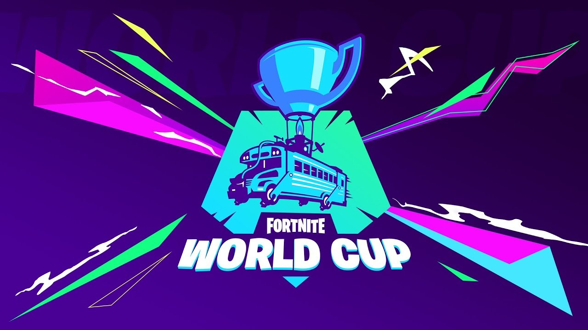

Los videojuegos a lo largo de los años han crecido de una forma increible, debido al impacto que tiene en las nuevas generaciones tan grande es su crecimiento que personas que son demsiado habiles para jugar adoptan los videojuegos como una profesion generando cantidades asombrosas de dinero, una forma en la que se han ganado miles de dolares es en torneos mundiales donde personas jovenes o adultas ganan cantidades grandes de dinero a continuacion te daremos un top 4 de torneos mas importantes en este mundo de los videojuegos.

Este torneo anual es organizado por Riot Games. Se trata de uno de los eventos de esports más importantes del mundo, en el que los distintos equipos compiten por alzarse con la victoria y conseguir la Copa del Invocador y un premio económico de casi $1.000.000 de euros, el ultimo equipo en lograr ganar este torneo es el equipo chino llamado FunPlus Phoenix. 
En este torneo organizado por Epic Games cuenta con premios de mas de $100 millones de dolares en premios, este torneo es organizado anualmente pero por cuestiones de la pandemia solo se a hecho una vez el pasado 26 al 28 de julio del 2019, con cuatro modalidades la mas importantes fueron en solitario y duos, en solitarios gano un jugador americano de 16 años de edad Bugha ganando $3,000,000 de dolares, en la modalidad de duos gano un duo europeo Aqua y Nyhrox ganando $3,000,000 de dolares.
Es un campeonato del juego Dota 2 que es patrocinado por la empresa Valve Corporation, su primer mundial fue celebrado en Colonia Alemania en la Gamescom del 2011, gracias a su impacto se sigue llevando a cabo en la actualidad, a tenido sede en Seattle, Vancouver y Shanghai, la ultima sede fue en Shangai en el Mercedes Benz Arena y el equipo ganador fue OG.
Este torneo lo organiza Activision Company la misma compañia creadora del videojuego, tuvo su primera edicion el año 2016 y actualmente se sigue celebrando este torneo el equipo ganador obtiene la cantidad de 6 millones de dolares en las competiciones de enero 2020 conto con 12 equipos participantes de distintos paises y regiones del mundo y en esta edicion el equipo ganador fue Dallas Empire ganando al favortio del torneo Atlanta Faze.